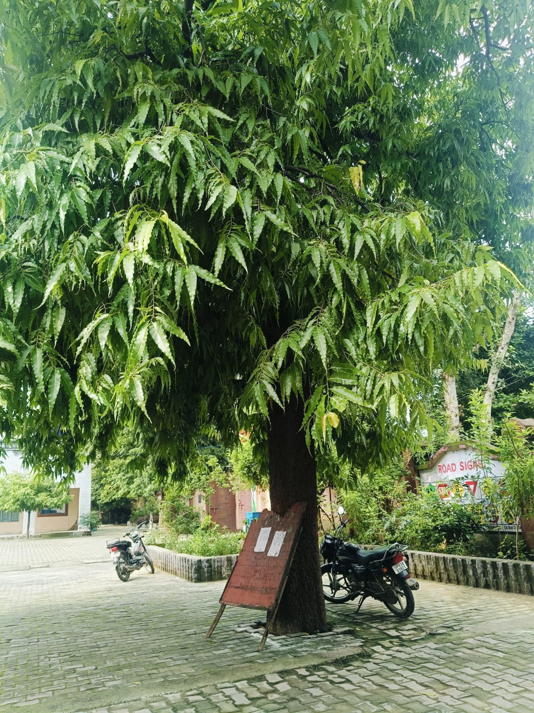

शिकोहाबाद, फिरोजाबाद

सामान्य नाम: अशोक
वैज्ञानिक नाम: Polyalthia longifolia
कुल: Annonaceae
प्रकार: सदाबहार वृक्ष
अशोक एक सुंदर और सदाबहार वृक्ष है। इसकी लंबी, संकरी और घनी पत्तियाँ इसे आकर्षक बनाती हैं। यह वृक्ष मुख्य रूप से उद्यानों, विद्यालयों और सड़कों के किनारे लगाया जाता है।
अशोक का वृक्ष पर्यावरण को हरा-भरा बनाने और वायु की गुणवत्ता सुधारने में सहायक है। इसका उपयोग सजावटी वृक्ष के रूप में भी किया जाता है।
इस वृक्ष की ऊँचाई अधिक हो सकती है और इसका सीधा, स्तंभ जैसा आकार इसे विशेष बनाता है।